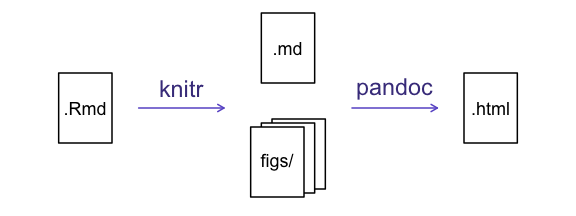

Overview
Teaching: 60 min Exercises: 15 minQuestions
How can I integrate software and reports?
Objectives
Value of reproducible reports
Basics of Markdown
R code chunks
Chunk options
Inline R code
Other output formats
Data analysis reports
Data analysts tend to write a lot of reports, describing their analyses and results, for their collaborators or to document their work for future reference.
When I was first starting out, I’d write an R script with all of my work, and would just send an email to my collaborator, describing the results and attaching various graphs. In discussing the results, there would often be confusion about which graph was which.
I moved to writing formal reports, with Word or LaTeX, but I’d have to spend a lot of time getting the figures to look right. Mostly, the concern is about page breaks.
Everything is easier now that I create a web page (as an html file). It can be one long stream, so I can use tall figures that wouldn’t ordinary fit on one page. Scrolling is your friend.
Literate programming
Ideally, such analysis reports are reproducible documents: If an error is discovered, or if some additional subjects are added to the data, you can just re-compile the report and get the new or corrected results (versus having to reconstruct figures, paste them into a Word document, and further hand-edit various detailed results).
The key tool for R is knitr, which allows you to create a document that is a mixture of text and some chunks of code. When the document is processed by knitr, chunks of R code will be executed, and graphs or other results inserted.
This sort of idea has been called “literate programming”.
knitr allows you to mix basically any sort of text with any sort of code, but we recommend that you use R Markdown, which mixes Markdown with R. Markdown is a light-weight mark-up language for creating web pages.
Creating an R Markdown file
Within R Studio, click File → New File → R Markdown and you’ll get a dialog box like this:

You can stick with the default (HTML output), but give it a title.
Basic components of R Markdown
The initial chunk of text contains instructions for R: you give the thing a title, author, and date, and tell it that you’re going to want to produce html output (in other words, a web page).
---
title: "Initial R Markdown document"
author: "Karl Broman"
date: "April 23, 2015"
output: html_document
---
You can delete any of those fields if you don’t want them included. The double-quotes aren’t strictly necessary in this case. They’re mostly needed if you want to include a colon in the title.
RStudio creates the document with some example text to get you started. Note below that there are chunks like
```{r}
summary(cars)
```
These are chunks of R code that will be executed by knitr and replaced by their results. More on this later.
Also note the web address that’s put between angle brackets (< >) as
well as the double-asterisks in **Knit**. This is
Markdown.
Markdown
Markdown is a system for writing web pages by marking up the text much as you would in an email rather than writing html code. The marked-up text gets converted to html, replacing the marks with the proper html code.
For now, let’s delete all of the stuff that’s there and write a bit of markdown.
You make things bold using two asterisks, like this: **bold**,
and you make things italics by using underscores, like this:
_italics_.
You can make a bulleted list by writing a list with hyphens or asterisks, like this:
* bold with double-asterisks
* italics with underscores
* code-type font with backticks
or like this:
- bold with double-asterisks
- italics with underscores
- code-type font with backticks
Each will appear as:
- bold with double-asterisks
- italics with underscores
- code-type font with backticks
(I prefer hyphens over asterisks, myself.)
You can make a numbered list by just using numbers. You can use the same number over and over if you want:
1. bold with double-asterisks
1. italics with underscores
1. code-type font with backticks
This will appear as:
- bold with double-asterisks
- italics with underscores
- code-type font with backticks
You can make section headers of different sizes by initiating a line
with some number of # symbols:
# Title
## Main section
### Sub-section
#### Sub-sub section
You compile the R Markdown document to an html webpage by clicking the “Knit HTML” in the upper-left. And note the little question mark next to it; click the question mark and you’ll get a “Markdown Quick Reference” (with the Markdown syntax) as well to the RStudio documentation on R Markdown.
Challenge
Create a new R Markdown document. Delete all of the R code chunks and write a bit of Markdown (some sections, some italicized text, and an itemized list).
Convert the document to a webpage.
A bit more Markdown
You can make a hyperlink like this:
[text to show](http://the-web-page.com).
You can include an image file like this: 
You can do subscripts (e.g., F~2~) with F~2 and superscripts (e.g.,
F^2^) with F^2^.
If you know how to write equations in
LaTeX, you’ll be glad to know that
you can use $ $ and $$ $$ to insert math equations, like
$E = mc^2$ and
$$y = \mu + \sum_{i=1}^p \beta_i x_i + \epsilon$$
R code chunks
Markdown is interesting and useful, but the real power comes from mixing markdown with chunks of R code. This is R Markdown. When processed, the R code will be executed; if they produce figures, the figures will be inserted in the final document.
The main code chunks look like this:
```{r load_data}
gapminder <- read.csv("~/Desktop/gapminder.csv")
```
That is, you place a chunk of R code between ```{r chunk_name}
and ```. It’s a good idea to give each chunk
a name, as they will help you to fix errors and, if any graphs are
produced, the file names are based on the name of the code chunk that
produced them.
Challenge
Add code chunks to
- Load the ggplot2 package
- Read the gapminder data
- Create a plot
How things get compiled
When you press the “Knit HTML” button, the R Markdown document is processed by knitr and a plain Markdown document is produced (as well as, potentially, a set of figure files): the R code is executed and replaced by both the input and the output; if figures are produced, links to those figures are included.
The Markdown and figure documents are then processed by the tool pandoc, which converts the Markdown file into an html file, with the figures embedded.

Chunk options
There are a variety of options to affect how the code chunks are treated.
- Use
echo=FALSEto avoid having the code itself shown. - Use
results="hide"to avoid having any results printed. - Use
eval=FALSEto have the code shown but not evaluated. - Use
warning=FALSEandmessage=FALSEto hide any warnings or messages produced. - Use
fig.heightandfig.widthto control the size of the figures produced (in inches).
So you might write:
```{r load_libraries, echo=FALSE, message=FALSE}
library(dplyr)
library(ggplot2)
```
Often there will be particular options that you’ll want to use repeatedly; for this, you can set global chunk options, like so:
```{r global_options, echo=FALSE}
knitr::opts_chunk$set(fig.path="Figs/", message=FALSE, warning=FALSE,
echo=FALSE, results="hide", fig.width=11)
```
The fig.path option defines where the figures will be saved. The /
here is really important; without it, the figures would be saved in
the standard place but just with names that being with Figs.
If you have multiple R Markdown files in a common directory, you might
want to use fig.path to define separate prefixes for the figure file
names, like fig.path="Figs/cleaning-" and fig.path="Figs/analysis-".
Challenge
Use chunk options to control the size of a figure and to hide the code.
Inline R code
You can make every number in your report reproducible. Use
`r and ` for an in-line code chunk,
like so: `r round(some_value, 2)`. The code will be
executed and replaced with the value of the result.
Don’t let these in-line chunks get split across lines.
Perhaps precede the paragraph with a larger code chunk that does
calculations and defines things, with include=FALSE for that larger
chunk (which is the same as echo=FALSE and results="hide").
I’m very particular about rounding in such situations. I may want
2.0, but round(2.03, 1) will give just 2.
The
myround
function in my R/broman package handles
this.
Challenge
Try out a bit of in-line R code.
Other output options
You can also convert R Markdown to a PDF or a Word document. Click the
little triangle next to the “Knit HTML” button to get a drop-down
menu. Or you could put pdf_document or word_document in the header
of the file.
Tip: Creating PDF documents
Creating .pdf documents may require installation of some extra software. If required this is detailed in an error message.
Tex for windows is available here.
Tex for mac is available here.
Resources
- Knitr in a knutshell tutorial
- Dynamic Documents with R and knitr (book)
- R Markdown documentation
- R Markdown cheat sheet
Key Points
Mix reporting written in R Markdown with software written in R.
Specify chunk options to control formatting.
Use
knitrto convert these documents into PDF and other formats.